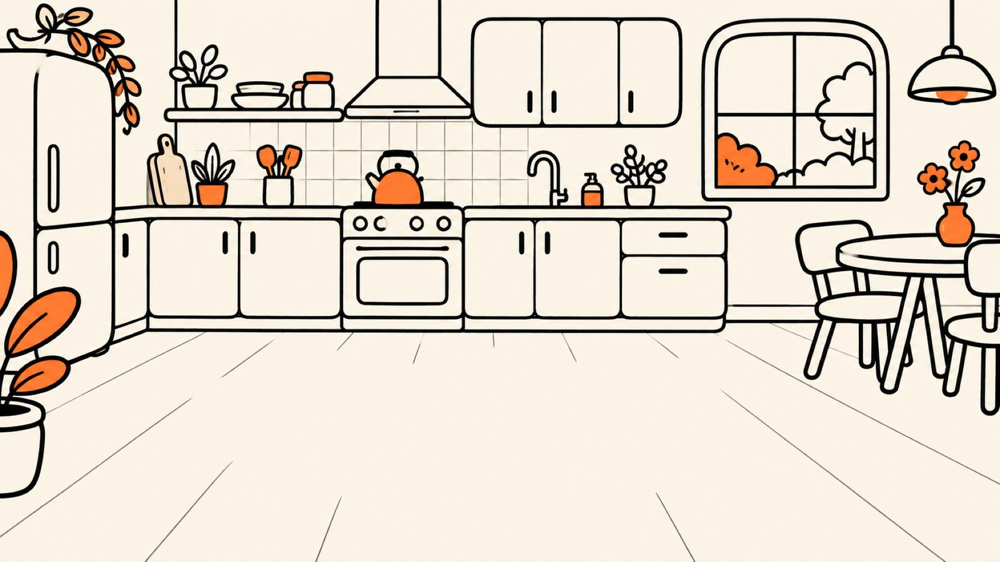
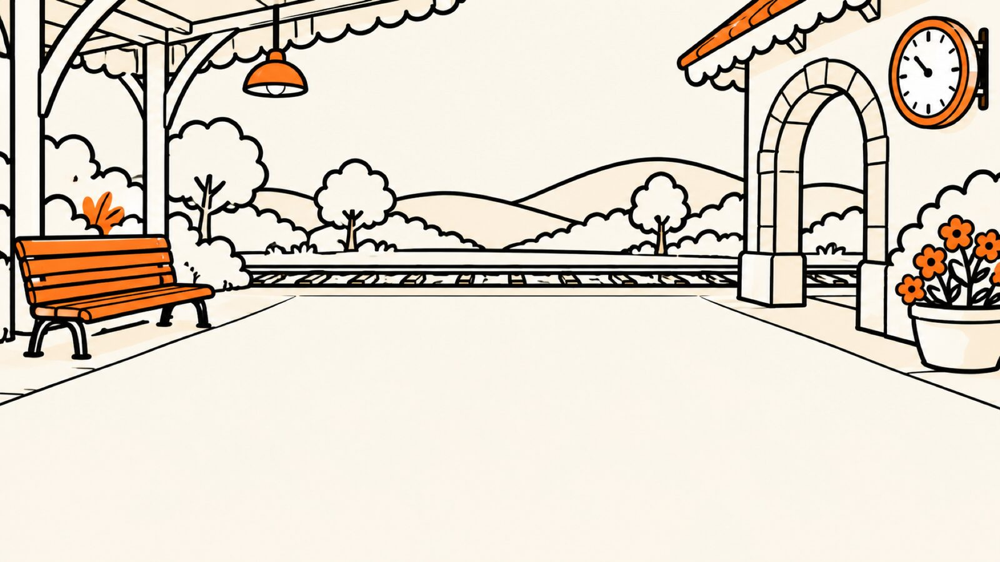
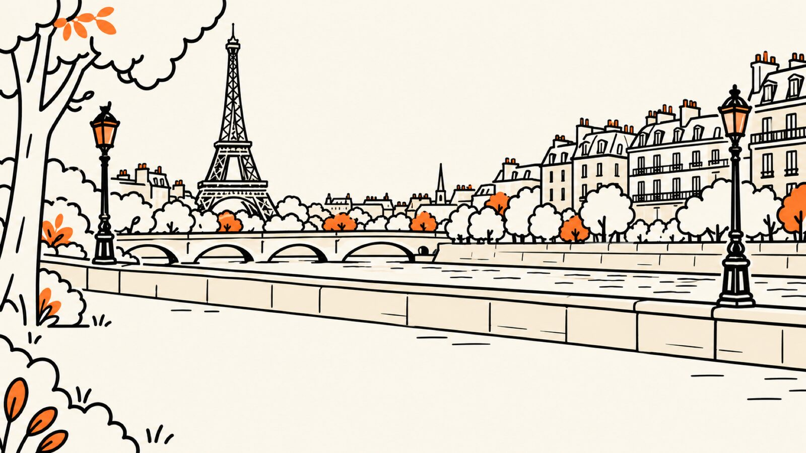
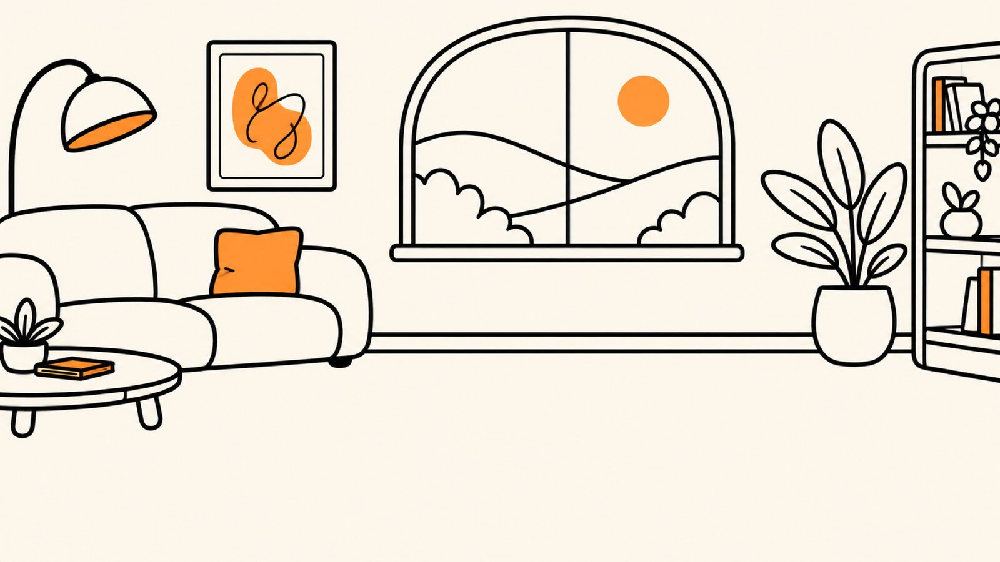
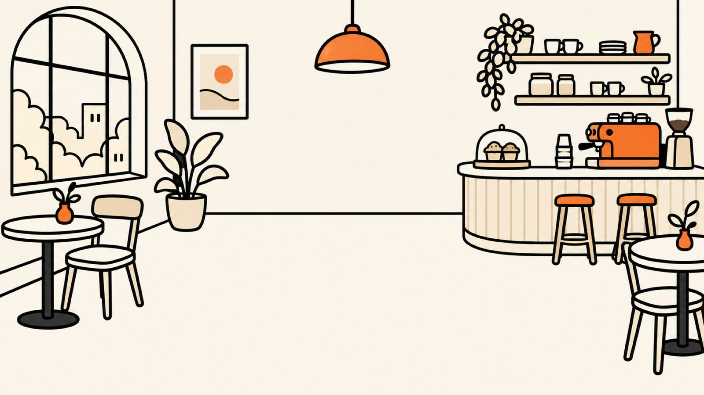
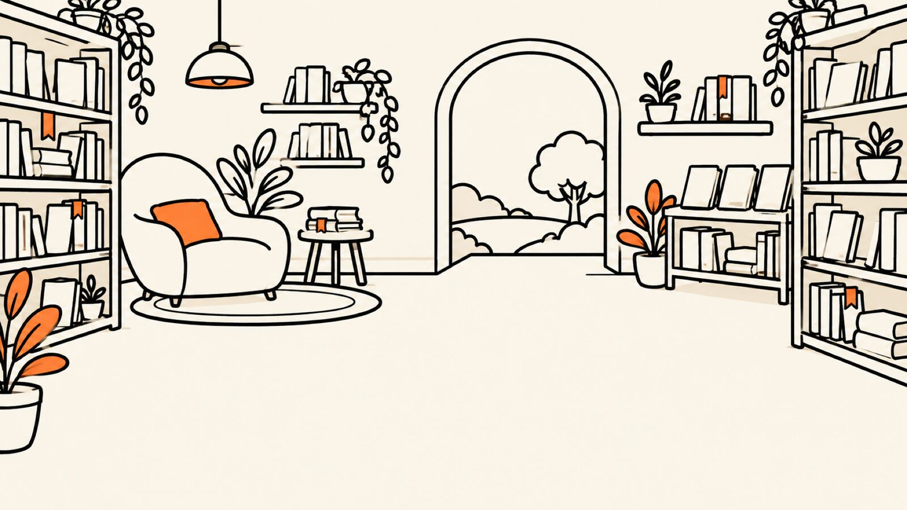
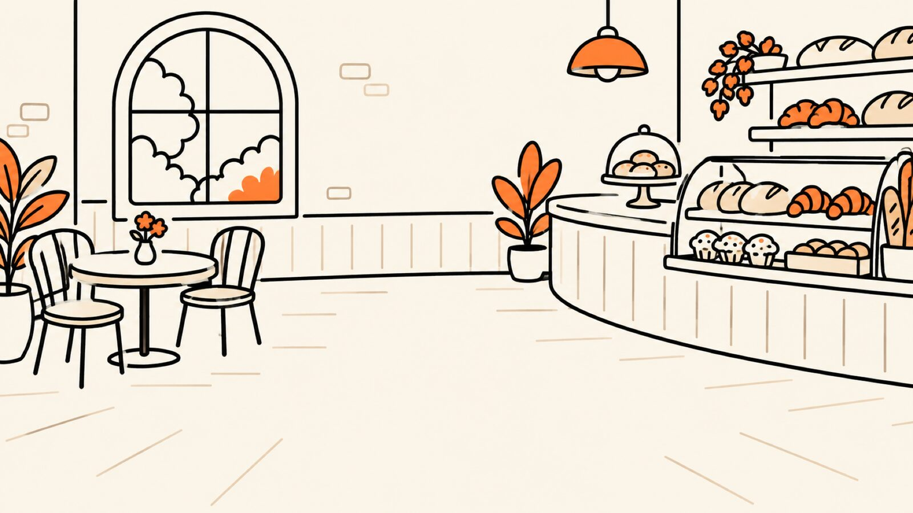
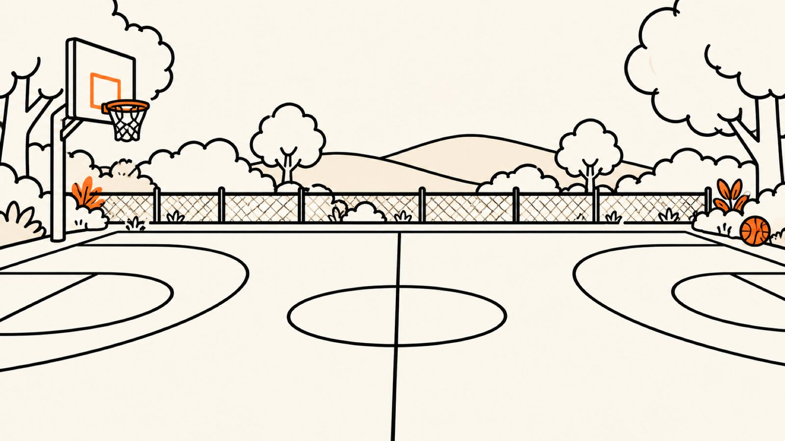
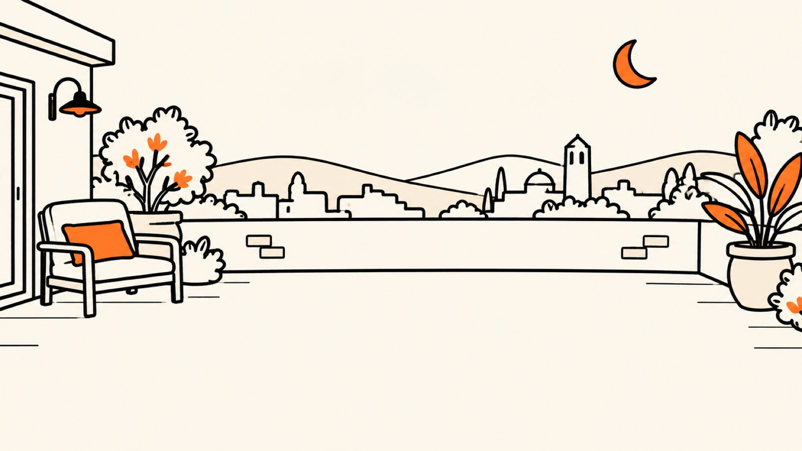
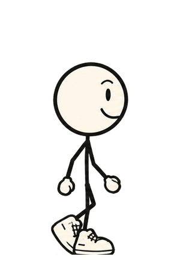

Doddy's little world
What can Doddy do? Quite a lot, actually.
Ten random moments from an ordinary day, and what a mate in your pocket does with them. Pick a place. Doddy walks there.
 Home, 08:45You're late. Again.
Home, 08:45You're late. Again.

The kitchenJacket or no jacket?

The stationThe awkward text

Somewhere abroadLost in translation
The sofaMy brain has left the chat
The café, 13:00What should we eat?
The bookshopExplain it like I'm five
The bakeryThe shopping bag
The courtBe more sarcastic
The roof, 22:30Don't let me forget
On his way to the café
Click a place. Doddy walks there, and the situation plays out. Scripted demonstrations, labelled with what's built today.